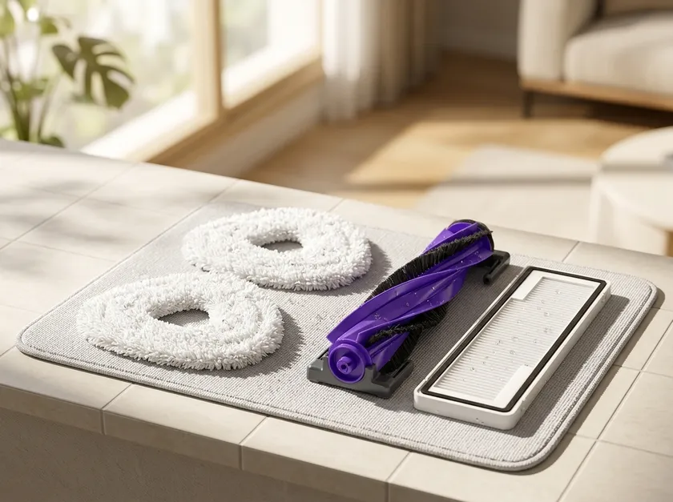
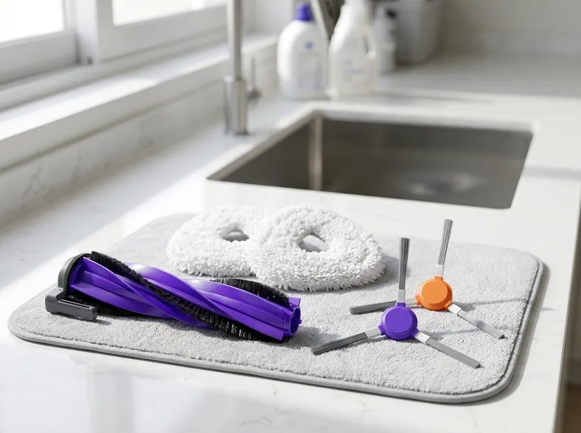
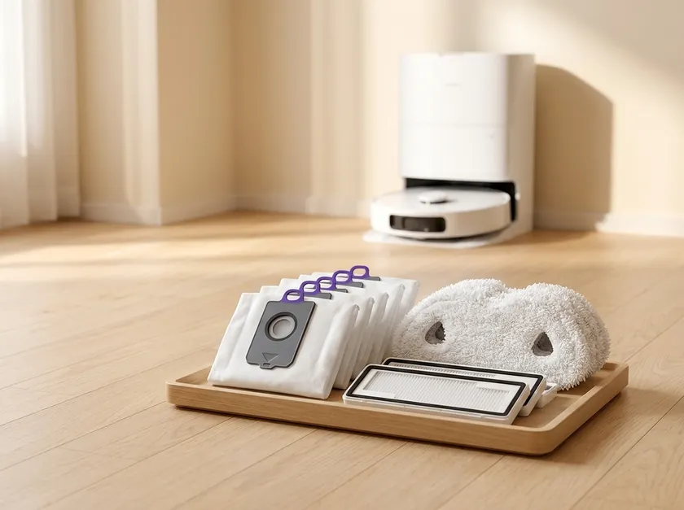

나르왈 (Narwal)
나르왈 프레오 X 울트라 1년 세트 구성과 브러시·삼각 물걸레·더스트백 관리법
글·구성: 제이상점 · 기종별 1:1 호환 실물 점검 · 교체 주기 비교표 · 스마트스토어 패키지 안내

핵심 관리 · 선택 체크포인트
- 한쪽이 열린 원추형 브러시로 머리카락 엉킴을 줄인 나르왈 프레오 X 울트라는 브러시 날개와 둥근 삼각형 물걸레 패드, 본체 일체형 더스트백을 주기에 맞춰 교체해 주면 관리가 무척 간편합니다.
- 원추형 플로팅 브러시와 삼각형 물걸레 패드·더스트백 점검: 프레오 X 울트라는 머리카락이 한쪽 끝으로 빠져나가는 원추형 브러시와 둥근 삼각형 걸레 패드를 사용합니다.
- 1년 패키지 구성품과 기종별 옵션 확인표: 보유 모델명이 나르왈 프레오 X 울트라인지 확인한 뒤 상세페이지에서 세트 옵션을 선택해 주세요.
- 원목 수납함 분류 보관과 베란다 통풍 매트 건조 루틴: 예비 더스트백과 브러시는 원목 수납함에 종류별로 담아 두고, 세척한 삼각 물걸레 패드와 필터는 베란다
- 물세척 필터의 건조 기준은 필터 세척 후 24시간 건조·재장착 안내에서, 더스트백 여분과 교체 시점 확인법은 더스트백 여분과 봉투 상태 확인하기에서 살펴보실 수 있습니다.
실물 부품 디테일 · 관리 구성 이미지




부품 규격 · 점검 기준표
| 확인 항목 | 부품·옵션 특징 | 점검·선택 포인트 |
|---|---|---|
| 엉킴 방지 메인브러시·사이드브러시 | 프레오 X 울트라 전용 브러시 + 2발 사이드브러시 | 브러시 회전축 먼지 제거 및 사이드브러시 모 상태 확인 |
| 둥근 삼각형 물걸레 패드 | 도톰한 극세사 삼각 회전 패드 | 세척 후 통풍 건조 및 예비 패드와 2매 동시 교체 |
| 전용 필터·더스트백 | 미세먼지 헤파필터 + 전용 더스트백 | 필터 24시간 완전 건조 및 더스트백 교체 주기 체크 |
💡 교체 주기가 겹치는 필터·브러시·물걸레·더스트백은 단품 배송비를 여러 번 내기보다 나르왈 프레오 X 울트라 기간별 세트(3개월·6개월·1년)로 미리 구비해 두면 물세척 후 24시간 교대 건조까지 끊김 없이 관리할 수 있습니다.
자주 묻는 질문 (FAQ)
Q. 나르왈 프레오 X 울트라의 엉킴 방지 메인브러시·사이드브러시 규격과 관리 기준은 무엇인가요?
A. 프레오 X 울트라 전용 브러시 + 2발 사이드브러시 규격을 사용하며, 브러시 회전축 먼지 제거 및 사이드브러시 모 상태 확인 기준으로 점검·교체하면 청소 효율을 안정적으로 유지할 수 있습니다.
Q. 나르왈 프레오 X 울트라의 둥근 삼각형 물걸레 패드 규격과 관리 기준은 무엇인가요?
A. 도톰한 극세사 삼각 회전 패드 규격을 사용하며, 세척 후 통풍 건조 및 예비 패드와 2매 동시 교체 기준으로 점검·교체하면 청소 효율을 안정적으로 유지할 수 있습니다.
Q. 나르왈 프레오 X 울트라의 전용 필터·더스트백 규격과 관리 기준은 무엇인가요?
A. 미세먼지 헤파필터 + 전용 더스트백 규격을 사용하며, 필터 24시간 완전 건조 및 더스트백 교체 주기 체크 기준으로 점검·교체하면 청소 효율을 안정적으로 유지할 수 있습니다.
제이상점 1:1 검수 추천 패키지 · 구매 안내
메인 추천 구성
대표 구성 참고가 63,900원대 (옵션·쿠폰별 스마트스토어 결제 화면 기준)
1년 세트 (세제 미포함)6개월 세트 (세제 미포함)3개월 세트 (세제 미포함)
☑️ 주문 전 확인해 두면 좋은 제이상점 안심 포인트
· 기종별 1:1 전용 규격 검수: 모델명·연식에 맞는 호환·정품 구성을 검수해 오주문 불안을 줄였습니다.
· 해외직배송 미리 주문 팁: 중국 구매대행·해외직배송 상품이므로 마지막 여분 1개를 꺼내 쓰는 시점에 개인통관고유부호와 함께 여유 있게 주문해 두시면 훨씬 경제적인 비용으로 끊김 없이 교체하실 수 있습니다.
· 기종별 1:1 전용 규격 검수: 모델명·연식에 맞는 호환·정품 구성을 검수해 오주문 불안을 줄였습니다.
· 해외직배송 미리 주문 팁: 중국 구매대행·해외직배송 상품이므로 마지막 여분 1개를 꺼내 쓰는 시점에 개인통관고유부호와 함께 여유 있게 주문해 두시면 훨씬 경제적인 비용으로 끊김 없이 교체하실 수 있습니다.
📖 더 많은 가정 내 사용 스토리와 상세 후기가 궁금하시다면
📱 네이버 블로그 모바일 원문 보기 ↗